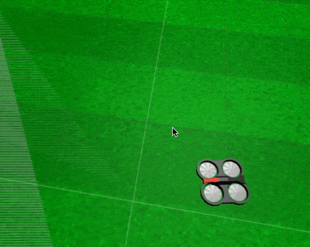

<img src="img/drone.jpg" width="450" />
<!-- <img src="img/rosject.png" width="250" style="float:left;" /> --><!--* ROSject Link: http://bit.ly/2naOJid* Package Name: **drone_construct*** Launch File: **main.launch**--><b>Estimated time to completion:</b> 2.5 hours<br><br><b>What will you learn with this unit?</b>* How to create an action server* How to build your own action messageEstimated time to completion: 2.5 hours
What will you learn with this unit?
In the previous lesson, you learned how to <b>CALL</b> an action server creating an action client. In this lesson, you are going to learn how to <b>CREATE</b> your own action server.In the previous lesson, you learned how to CALL an action server creating an action client. In this lesson, you are going to learn how to CREATE your own action server.
<figure> <img id="fig-4.5" src="img/action_interface.png"/> <br> <center> <figcaption>Fig.4.5 - Action Interface Diagram Copy 2</figcaption></center></figure><p style="background:#EE9023;color:white;">**Exercise 4.11: Test Fibonacci Action Server through Notebook**</p><br>Execute the following Python code by clicking on it and then clicking on the play button on the top righ-hand corner of the IPython notebook.<br><br> <div class='white_bg'><img src="img/font-awesome_step-forward.png" style="float:left"/><br><br></div><br>You can also press **<i>[CTRL]+[Enter]</i>** to execute it.<br><br>When the program has finished, don't forget to <span class="ign_red">restart the Kernel</span>. This will clean up all the nodes generated by ROS through the python program. This is necessary because python programs can only launch <b>one</b> rospy node. Because this notebook is just a divided python script, it will give rospy Exception if you try to execute two snipets consecutively without restarting the kernel.You can do it by pressing the icon.<br><br><div class='white_bg'><img src="img/refresh_icon.png" style="float:left"/><br><br></div><br>What follows is the code of an example of a ROS action server. When called, the action server will generate a Fibonacci sequence of a given order. The action server goal message must indicate the order of the sequence to be calculated, the feedback of the sequence as it is being computed, and the result of the final Fibonacci sequence.Exercise 4.11: Test Fibonacci Action Server through Notebook

When the program has finished, don't forget to restart the Kernel. This will clean up all the nodes generated by ROS through the python program. This is necessary because python programs can only launch one rospy node. Because this notebook is just a divided python script, it will give rospy Exception if you try to execute two snipets consecutively without restarting the kernel.
You can do it by pressing the icon.
What follows is the code of an example of a ROS action server. When called, the action server will generate a Fibonacci sequence of a given order. The action server goal message must indicate the order of the sequence to be calculated, the feedback of the sequence as it is being computed, and the result of the final Fibonacci sequence.
<p style="background:#EE9023;color:white;">**END Exercise 4.11**</p>END Exercise 4.11
<p style="background:#3B8F10;color:white;" id="prg-4.11a">**Python Program {4.11a}: fibonacci_action_server.py** </p>Python Program {4.11a}: fibonacci_action_server.py
#! /usr/bin/env pythonimport rospyimport actionlibfrom actionlib_tutorials.msg import FibonacciFeedback, FibonacciResult, FibonacciActionclass FibonacciClass(object): # create messages that are used to publish feedback/result _feedback = FibonacciFeedback() _result = FibonacciResult() def __init__(self): # creates the action server self._as = actionlib.SimpleActionServer("fibonacci_as", FibonacciAction, self.goal_callback, False) self._as.start() def goal_callback(self, goal): # this callback is called when the action server is called. # this is the function that computes the Fibonacci sequence # and returns the sequence to the node that called the action server # helper variables r = rospy.Rate(1) success = True # append the seeds for the fibonacci sequence self._feedback.sequence = [] self._feedback.sequence.append(0) self._feedback.sequence.append(1) # publish info to the console for the user rospy.loginfo('"fibonacci_as": Executing, creating fibonacci sequence of order %i with seeds %i, %i' % ( goal.order, self._feedback.sequence[0], self._feedback.sequence[1])) # starts calculating the Fibonacci sequence fibonacciOrder = goal.order for i in xrange(1, fibonacciOrder): # check that preempt (cancelation) has not been requested by the action client if self._as.is_preempt_requested(): rospy.loginfo('The goal has been cancelled/preempted') # the following line, sets the client in preempted state (goal cancelled) self._as.set_preempted() success = False # we end the calculation of the Fibonacci sequence break # builds the next feedback msg to be sent self._feedback.sequence.append(self._feedback.sequence[i] + self._feedback.sequence[i-1]) # publish the feedback self._as.publish_feedback(self._feedback) # the sequence is computed at 1 Hz frequency r.sleep() # at this point, either the goal has been achieved (success==true) # or the client preempted the goal (success==false) # If success, then we publish the final result # If not success, we do not publish anything in the result if success: self._result.sequence = self._feedback.sequence rospy.loginfo('Succeeded calculating the Fibonacci of order %i' % fibonacciOrder ) self._as.set_succeeded(self._result) if __name__ == '__main__': rospy.init_node('fibonacci') FibonacciClass() rospy.spin()<p style="background:#3B8F10;color:white;">**Code Explanation Python Program: {4.11a}**</p>Code Explanation Python Program: {4.11a}
In this case, the action server is using an action message definition called **<i>Fibonacci.action</i>**. That message has been created by ROS into its **<i>actionlib_tutorials</i>** package.In this case, the action server is using an action message definition called Fibonacci.action. That message has been created by ROS into its actionlib_tutorials package.
from actionlib_tutorials.msg import FibonacciFeedback, FibonacciResult, FibonacciActionHere we are importing the message objects generates by this **<i>Fibonacci.action</i>** file.Here we are importing the message objects generates by this Fibonacci.action file.
_feedback = FibonacciFeedback()_result = FibonacciResult()Here, we are creating the message objects that will be used for publishing the **feedback** and the **result** of the action.Here, we are creating the message objects that will be used for publishing the feedback and the result of the action.
def __init__(self): # creates the action server self._as = actionlib.SimpleActionServer("fibonacci_as", FibonacciAction, self.goal_callback, False) self._as.start()This is the constructor of the class. Inside this constructor, we are creating an Action Server that will be called **"fibonacci_as"**, that will use the Action message **FibonacciAction**, and that will have a callback function called **goal_callback**, that will be activated each time a new goal is sent to the Action Server.This is the constructor of the class. Inside this constructor, we are creating an Action Server that will be called "fibonacci_as", that will use the Action message FibonacciAction, and that will have a callback function called goal_callback, that will be activated each time a new goal is sent to the Action Server.
def goal_callback(self, goal): r = rospy.Rate(1) success = TrueHere me define the **goal callback** function. Each time a new goal is sento to the Action Server, this function will be called.Here me define the goal callback function. Each time a new goal is sento to the Action Server, this function will be called.
self._feedback.sequence = []self._feedback.sequence.append(0)self._feedback.sequence.append(1) rospy.loginfo('"fibonacci_as": Executing, creating fibonacci sequence of order %i with seeds %i, %i' % ( goal.order, self._feedback.sequence[0], self._feedback.sequence[1]))Here we are **initializing** the Fibonacci sequence, and setting up the first values (seeds) of it. Also, we print data for the user related to the Fibonacci sequence the Action Server is going to calculate.Here we are initializing the Fibonacci sequence, and setting up the first values (seeds) of it. Also, we print data for the user related to the Fibonacci sequence the Action Server is going to calculate.
fibonacciOrder = goal.orderfor i in xrange(1, fibonacciOrder):Here, we start a loop that while go until the **goal.order** value is reached. This value is, obviously, the order of the Fibonacci sequence that the user has sent from the Action Client.Here, we start a loop that while go until the goal.order value is reached. This value is, obviously, the order of the Fibonacci sequence that the user has sent from the Action Client.
if self._as.is_preempt_requested(): rospy.loginfo('The goal has been cancelled/preempted') # the following line, sets the client in preempted state (goal cancelled) self._as.set_preempted() success = False # we end the calculation of the Fibonacci sequence breakWe check if the goal has been cancelled (preempted). Remember you saw how to to preempt a goal in the previous Chapter.We check if the goal has been cancelled (preempted). Remember you saw how to to preempt a goal in the previous Chapter.
self._feedback.sequence.append(self._feedback.sequence[i] + self._feedback.sequence[i-1])self._as.publish_feedback(self._feedback)r.sleep()Here, we are actually calculating the values of the Fibonacci sequence. You can check how a Fibonacci sequence is calculated here: <a href="https://en.wikipedia.org/wiki/Fibonacci_number" target="_blank">Fibonacci sequence</a>. Also, we keep publishing **feedback** each time a new value of the sequence is calculated.Here, we are actually calculating the values of the Fibonacci sequence. You can check how a Fibonacci sequence is calculated here: Fibonacci sequence. Also, we keep publishing feedback each time a new value of the sequence is calculated.
if success: self._result.sequence = self._feedback.sequence rospy.loginfo('Succeeded calculating the Fibonacci of order %i' % fibonacciOrder ) self._as.set_succeeded(self._result)If everything went OK, we publish the **result**, which is the whole Fibonacci sequence, and we set the Action as succedeed using the **set_succeeded()** function.If everything went OK, we publish the result, which is the whole Fibonacci sequence, and we set the Action as succedeed using the set_succeeded() function.
<p style="background:#3B8F10;color:white;">**End Code Explanation Python Program: {4.11a}**</p>End Code Explanation Python Program: {4.11a}
<p style="background:#EE9023;color:white;">**Exercise 4.12a: Check Fibonacci action msg structure**</p><br>Check the structure of the Fibonacci.action message definition by visiting the **<i>action</i>** directory of the **<i>actionlib_tutorials</i>** package.Exercise 4.12a: Check Fibonacci action msg structure
<p style="background:#EE9023;color:white;">**END Exercise 4.12a**</p>END Exercise 4.12a
<p style="background:#EE9023;color:white;">**Exercise 4.12b: Watch feedback and result topic messages output from the action server**</p><br>Launch again the python code above <a href="#prg-4.11a">{4.11a}</a> to have the Fibonacci server running.<br><br>Then, execute the following commands in their corresponding WebShells.<br><table style="float:left;background: #407EAF"><tr><th><p class="transparent">Execute in WebShell #1: Echo the result topic</p></th></tr></table>Exercise 4.12b: Watch feedback and result topic messages output from the action server
Launch again the python code above {4.11a} to have the Fibonacci server running.
Then, execute the following commands in their corresponding WebShells.
|
Execute in WebShell #1: Echo the result topic |
|---|
rostopic echo /fibonacci_as/result<table style="float:left;background: #407EAF"><tr><th><p class="transparent">Execute in WebShell #2: Echo the feedback topic</p></th></tr></table>|
Execute in WebShell #2: Echo the feedback topic |
|---|
rostopic echo /fibonacci_as/feedback<table style="float:left;background: #407EAF"><tr><th><p class="transparent">Execute in WebShell #3: Manually send the goal to your Fibonacci server, publishing directly to the topic (as you learned in the previous chapter)</p></th></tr></table>|
Execute in WebShell #3: Manually send the goal to your Fibonacci server, publishing directly to the topic (as you learned in the previous chapter) |
|---|
rostopic pub /fibonacci_as/goal actionlib_tutorials/FibonacciActionGoal [TAB][TAB]<p style="background:#AE0202;color:white;">**Expected Result for Exercise 4.12b**</p><br>After having called the action, the feedback topic should be publishing the feedback, and the result once the calculations are finished.<br><p style="background:#3B8F10;color:white;">**Data for Exercise 4.12b**</p><br><ul><li>You must be aware that the name of the messages (the class) used in the Python code are called **<i>FibonacciGoal</i>**, **<i>FibonacciResult</i>**, and **<i>FibonacciFeedback</i>**, while the name of the messages used in the topics are called **<i>FibonacciActionGoal</i>**, **<i>FibonacciActionResult</i>**, and **<i>FibonacciActionFeedback</i>**. <br><br>Do not worry about that, just bear it in mind and use it accordingly.</li></ul>Expected Result for Exercise 4.12b
Data for Exercise 4.12b
<p style="background:#EE9023;color:white;">**END Exercise 4.12b**</p>END Exercise 4.12b
<p style="background:#EE9023;color:white;" id="ex-4-13">**Exercice 4.13: Create Package with Action Server that moves the Ardrone in the air, making a square**</p><br>a) Create a package with an action server that makes the drone move in a square when called.<br><br>b) Call the action server through the topics and observe the result and feedback.<br><br>c) Base your code in the previous Fibonacci example <a href="#prg-4.11a">{4.11a}</a> and the client you did in Exercice 4.6 that moved the ardrone while taking pictures.<br><p style="background:#AE0202;color:white;">**Expected Result for Exercice 4.13**</p><br>The result must show the ardrone doing a square in the air when the action server is called, as shown in the animation beneath <a href="#fig-4.6">{Fig:4.6}</a><br><p style="background:#3B8F10;color:white;">**Data for Exercice 4.13**</p><ul><li>The size of the side of the square should be specified in the goal message as an integer.</li><li>The feedback should publish the current side (as a number) the robot is at while doing the square.</li><li>The result should publish the total number of seconds it took the drone to do the square</li><li>Use the <span style="color: orange"><i>Test.action</i></span> message for that action server. Use the shell command <span style="color: orange"><i>locate Test.action</i></span> to find where that message is defined. Then, analyze the different fields of the msg in order to learn how to use it in your action server.</li></ul>Exercice 4.13: Create Package with Action Server that moves the Ardrone in the air, making a square
Expected Result for Exercice 4.13
Data for Exercice 4.13
<p style="background:#EE9023;color:white;" id="ex-4-13">**END Exercice 4.13**</p>END Exercice 4.13
<p style="background:green;color:white;">Solution Exercise 4.13</p>Solution Exercise 4.13
Please Try to do it by yourself unless you get stuck or need some inspiration. You will learn much more if you fight for each exercise.Please Try to do it by yourself unless you get stuck or need some inspiration. You will learn much more if you fight for each exercise.
<img src="img/robotignite_logo_text.png"/>
Follow this link to open the solutions notebook for Unit3 Services Part1:[Actions Part2 Solutions](extra_files/unit4_basicROS_part2_solutions.ipynb)Follow this link to open the solutions notebook for Unit3 Services Part1:Actions Part2 Solutions
<p style="background:green;color:white;">END Solution Exercise 4.13</p>END Solution Exercise 4.13
<figure> <img id="fig-4.6" src="img/drone.gif"> <br> <center> <figcaption>Fig.4.6 - Ardrone moved through commands issed by an custom action server Ex 4.13</figcaption></center></figure><b>It is always recommended that you use the action messages already provided by ROS.</b> These can be found in the following ROS packages:* actionlib * Test.action * TestRequest.action * TwoInts.action * actionlib_tutorials * Fibonacci.action * Averaging.action <br>It is always recommended that you use the action messages already provided by ROS. These can be found in the following ROS packages:
actionlib
actionlib_tutorials
However, it may happen that you need to create your own type. Let's learn how to do it.However, it may happen that you need to create your own type. Let's learn how to do it.
To create your own custom action message you have to:To create your own custom action message you have to:
1.- Create an **action** directory within your package. 2.- Create your **Name.action** action message file. * The Name of the action message file will determine later the name of the classes to be used in the **action server** and/or **action client**. ROS convention indicates that the name has to be camel-case. * Remember the Name.action file has to contain three parts, each part separated by three hyphens. 1.- Create an action directory within your package.
2.- Create your Name.action action message file.
The Name of the action message file will determine later the name of the classes to be used in the action server and/or action client. ROS convention indicates that the name has to be camel-case.
Remember the Name.action file has to contain three parts, each part separated by three hyphens.
#goalpackage_where_message_is/message_type goal_var_name---#resultpackage_where_message_is/message_type result_var_name---#feedbackpackage_where_message_is/message_type feedback_var_name* If you do not need one part of the message (for example, you don't need to provide feedback), then you can leave that part empty. But you <b>must always specify the hyphen separtors</b>. 3.- Modify the file CMakeLists.txt and the package.xml to include action message compilation. Read the detailed description below.3.- Modify the file CMakeLists.txt and the package.xml to include action message compilation. Read the detailed description below.
<div id="custom_compilation"></div>## How to prepare CMakeLists.txt and package.xml files for custom action messages compilationYou have to edit two files in the package, in the same way that we explained for topics and services:* CMakeLists.txt* package.xmlYou have to edit two files in the package, in the same way that we explained for topics and services:
You will have to edit four functions inside CMakeLists.txt:* <span class="ign_green"><a href="#find_package">find_package()</a></span>* <span class="ign_green"><a href="#add_action_files">add_action_files()</a></span>* <span class="ign_green"><a href="#generate_messages">generate_messages()</a></span>* <span class="ign_green"><a href="#catkin_package">catkin_package()</a></span>You will have to edit four functions inside CMakeLists.txt:
All of the packages needed to COMPILE the messages of topic, services, and actions go here. <br>In <i>package.xml</i>, you have to state them as built.All of the packages needed to COMPILE the messages of topic, services, and actions go here.
In package.xml, you have to state them as built.
find_package(catkin REQUIRED COMPONENTS # your packages are listed here actionlib_msgs)### <span style="color: green;" id="add_action_files">II. add_action_files()</span>This function will contain all of the action messages from this package (which are stored in the <b>action</b> folder) that need to be compiled.<br>Place them beneath the FILES tag.This function will contain all of the action messages from this package (which are stored in the action folder) that need to be compiled.
Place them beneath the FILES tag.
add_action_files( FILES Name.action)### <span style="color: green;" id="generate_messages">III. generate_messages()</span>The packages needed for the action messages compilation are imported here. Write the same here as you wrote in the find_package.The packages needed for the action messages compilation are imported here. Write the same here as you wrote in the find_package.
generate_messages( DEPENDENCIES actionlib_msgs # Your packages go here)### <span style="color: green;" id="catkin_package">IV. catkin_package()</span>State here all of the packages that will be needed by someone that executes something from your package.<br>All of the packages stated here must be in the **package.xml** file as **<exec_depend>**.State here all of the packages that will be needed by someone that executes something from your package.
All of the packages stated here must be in the package.xml file as <exec_depend>.
catkin_package( CATKIN_DEPENDS rospy # Your package dependencies go here)Summarizing, You should end with a **CMakeLists.txt** file similar to this:Summarizing, You should end with a CMakeLists.txt file similar to this:
cmake_minimum_required(VERSION 2.8.3)project(my_custom_action_msg_pkg)## Find catkin macros and libraries## if COMPONENTS list like find_package(catkin REQUIRED COMPONENTS xyz)## is used, also find other catkin packagesfind_package(catkin REQUIRED COMPONENTS std_msgs actionlib_msgs)## Generate actions in the 'action' folderadd_action_files( FILES Name.action )## Generate added messages and services with any dependencies listed heregenerate_messages( DEPENDENCIES std_msgs actionlib_msgs )catkin_package( CATKIN_DEPENDS rospy)## Specify additional locations of header files## Your package locations should be listed before other locations# include_directories(include)include_directories( ${catkin_INCLUDE_DIRS})1.- Add all of the packages needed to compile the messages.If, for example, one of your variables in the **.action** file uses a message defined outside the std_msgs package, let's say **nav_msgs/Odometry**, you will need to import it. To do so, you would have to add as **<build_depend>** the **nav_msgs** package, adding the following line:1.- Add all of the packages needed to compile the messages.
If, for example, one of your variables in the .action file uses a message defined outside the std_msgs package, let's say nav_msgs/Odometry, you will need to import it. To do so, you would have to add as <build_depend> the nav_msgs package, adding the following line:
<build_depend>nav_msgs<build_depend>2.- On the other hand, if you need a package for the execution of the programs inside your package, you will have to import those packages as **<exec_depend>**, adding the following line:2.- On the other hand, if you need a package for the execution of the programs inside your package, you will have to import those packages as <exec_depend>, adding the following line:
<build_export_depend>nav_msgs<build_export_depend><exec_depend>nav_msgs<exec_depend>When you compile custom action messages, it's **mandatory** to add the **actionlib_msgs** as build_dependency.When you compile custom action messages, it's mandatory to add the actionlib_msgs as build_dependency.
<build_depend>actionlib_msgs</build_depend>When you use Python, it's **mandatory** to add the **rospy** as **run_dependency**.When you use Python, it's mandatory to add the rospy as run_dependency.
<build_export_depend>rospy<build_export_depend><exec_depend>rospy<exec_depend>This is due to the fact that the rospy python module is needed in order to run all of your python ROS code.This is due to the fact that the rospy python module is needed in order to run all of your python ROS code.
Summarizing, you should end with a package.xml file similar to this:Summarizing, you should end with a package.xml file similar to this:
<?xml version="1.0"?><package format="2"> <name>my_custom_action_msg_pkg</name> <version>0.0.0</version> <description>The my_custom_action_msg_pkg package</description> <maintainer email="user@todo.todo">user</maintainer> <license>TODO</license> <buildtool_depend>catkin</buildtool_depend> <build_depend>actionlib</build_depend> <build_depend>actionlib_msgs</build_depend> <build_depend>rospy</build_depend> <build_depend>std_msgs</build_depend> <build_export_depend>actionlib</build_export_depend> <build_export_depend>actionlib_msgs</build_export_depend> <build_export_depend>rospy</build_export_depend> <exec_depend>actionlib</exec_depend> <exec_depend>actionlib_msgs</exec_depend> <exec_depend>rospy</exec_depend> <export> </export></package>Finally, when everything is correctly set up, you just have to compile:Finally, when everything is correctly set up, you just have to compile:
roscd; cd ..catkin_makesource devel/setup.bashrosmsg list | grep NameYou will get an output to the last command, similar to this:You will get an output to the last command, similar to this:
my_custom_action_msg_pkg/NameActionmy_custom_action_msg_pkg/NameActionFeedbackmy_custom_action_msg_pkg/NameActionGoalmy_custom_action_msg_pkg/NameActionResultmy_custom_action_msg_pkg/NameFeedbackmy_custom_action_msg_pkg/NameGoalmy_custom_action_msg_pkg/NameResult<p style="background:green;color:white;">**Note**</p><br>Note that you haven't imported the <b>std_msgs</b> package anywhere. But you can use the messages declared there in your custom .actions. That's because this package forms part of the roscore file systems, so therefore, it's embedded in the compilation protocols, and no declaration of use is needed.Note
<img src="img/robotignite_logo_text.png"/>
For evaluating this Quiz, we will ask you to perform different tasks. For each task, very **specific instructions** will be provided: name of the package, names of the launch files and Python scripts, topic names to use, etc. It is **VERY IMPORTANT** that you strictly follow these instructions, since they will allow our automated correction system to properly test your Quiz, and assign a score to it. If the names you use are different from the ones specified in the exam instructions, your exercise will be marked as **FAILED**, even though it works correctly.For evaluating this Quiz, we will ask you to perform different tasks. For each task, very specific instructions will be provided: name of the package, names of the launch files and Python scripts, topic names to use, etc.
It is VERY IMPORTANT that you strictly follow these instructions, since they will allow our automated correction system to properly test your Quiz, and assign a score to it. If the names you use are different from the ones specified in the exam instructions, your exercise will be marked as FAILED, even though it works correctly.
### Create a Package with an action server with custom action message to move ardone* The new action server will receive two words as a goal: UP or DOWN.* When the action server receives the UP word, it will move the drone 1 meter up.* When the action server receives the DOWN word, it will move the drone 1 meter down.* As a feedback, it publishes once a second what action is taking place (going up or going down).* When the action finishes, the result will return nothing.**Useful Data for the Quiz:**Useful Data for the Quiz:
* You need to create a new action message with the specified values as <i>String</i>. This type can be imported from the <i>std_msgs</i> package.* The result part of the action message will be empty.* Since we are talking about a drone, you can specify Twist velocities in the three axes. You will need to do that in order to move the robot up and down.<p style="background:green;color:white;">Specifications</p>Specifications
* The name of the package where you'll place all the code related to the Quiz will be **actions_quiz**.* The name of the launch file that will start your Action Server will be **action_cutom_msg.launch**.* The name of the action will be **/action_custom_msg_as**.* The name of your Action message file will be **CustomActionMsg.action**.<p style="background:green;color:white;">Quiz Correction</p><br>When you have finished the Quiz, you can correct it in order to get a Mark. For that, just click on the following button at the top of this Notebook.<br><br><img src="img/correct_quiz_btn.png" width="150"/>Quiz Correction

<p style="background:red;color:white;">IMPORTANT</p><br><img src="img/warning_mark.png" width="200" /><br>Quizes can only be done once. This means that, once you correct your Quiz, and get a score for it, you won't be able to do it again and improve your score. So, be sure enough when you decide to correct your Quiz!IMPORTANT

ROS Actions: http://wiki.ros.org/actionlibHow actions work: http://wiki.ros.org/actionlib/DetailedDescriptionROS Actions: http://wiki.ros.org/actionlib
How actions work: http://wiki.ros.org/actionlib/DetailedDescription